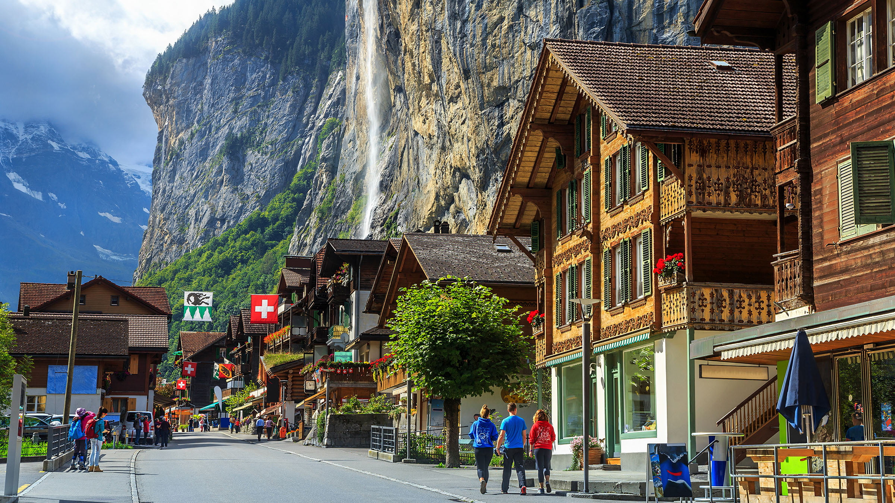

Suiza es un país montañoso de Europa Central, con varios lagos, aldeas y las altas cimas de los Alpes. Sus ciudades tienen barrios medievales, con monumentos como la torre del reloj Zytlogge en su capital, Berna, y el puente de madera de la capilla en Lucerna.
El país también es famoso por sus centros de esquí y los senderos de excursionismo. Las industrias bancaria y financiera son clave, y los relojes y el chocolate de Suiza son conocidos en todo el mundo.
Suiza cuenta con una de las economías capitalistas más estables, poderosas y modernas del mundo, la moneda oficial del país es el franco suizo (CHF).
Algunas de las actividades económicas más importantes en Suiza se encuentran la industria química, la industria farmacéutica, la fabricación de instrumentos musicales y de medición, las inmobiliarias, los servicios financieros y el turismo.
Suiza es altamente activa en cuanto al reciclaje y las regulaciones anticontaminantes, siendo uno de los recicladores más grandes del mundo, con un aprovechamiento de los materiales reciclables que va del 66% al 96%.